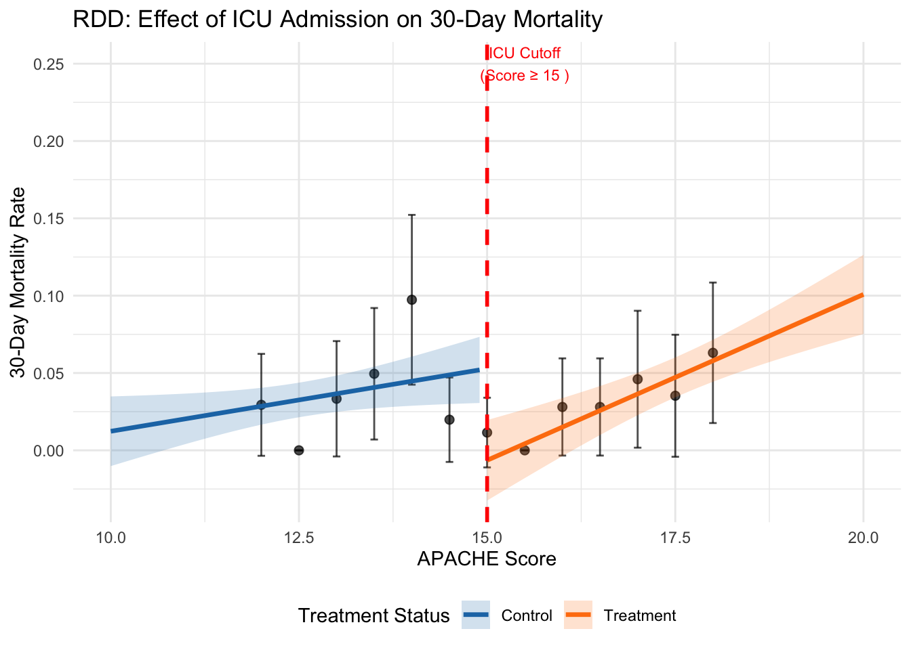

Chapter 6 Causal Inference in Practice V: Regression Discontinuity Design
6.1 Introduction
Regression Discontinuity Design (RDD) exploits arbitrary thresholds in treatment assignment to identify causal effects in observational data. Unlike other causal inference methods that rely on assumptions about unobserved confounders or parallel trends, RDD leverages the fact that treatment assignment changes discontinuously at a known cutoff point while potential outcomes vary smoothly. This creates a quasi-experimental setting where units just above and below the threshold are comparable, except for their treatment status, enabling credible causal inference even when randomized experiments are infeasible.
The method proves particularly valuable in policy evaluation contexts where treatments are assigned based on arbitrary cutoffs, such as scholarship eligibility based on test scores, medical interventions based on diagnostic thresholds, or regulatory compliance based on firm size. This essay examines RDD’s theoretical foundation, mathematical framework, and practical implementation through a healthcare application estimating the causal effect of intensive care unit admission on patient mortality using simulated data in R. We explore both sharp and fuzzy designs, discuss assumption validation, and compare RDD with alternative causal inference approaches.
RDD identification relies on the assumption that potential outcomes are continuous functions of a running variable at the treatment cutoff, while treatment assignment exhibits a discontinuity. Consider a running variable X with cutoff c, where treatment D = 1 if X ≥ c and D = 0 if X < c. The key insight is that units with X values arbitrarily close to c are similar in all respects except treatment status, making the cutoff a source of quasi-random variation. RDD applies when treatment assignment follows a deterministic rule based on an observed running variable \(X\):
\[ D_i = \begin{cases} 1 & \text{if } X_i \geq c \\ 0 & \text{if } X_i < c \end{cases} \]
where \(c\) represents the cutoff threshold. This sharp discontinuity contrasts with fuzzy RDD, where the assignment rule creates jumps in treatment probability rather than certainty. The key insight: individuals near the cutoff are exchangeable.
The RDD estimand targets the treatment effect at the cutoff:
\[ \tau_{RDD} = \mathbb{E}[Y_i(1) - Y_i(0) | X_i = c] \]
Since we observe only one potential outcome for each unit, identification requires continuity of the conditional expectation function at the cutoff. Formally:
\[ \mathbb{E}[Y_i(0) | X_i = x] \text{ and } \mathbb{E}[Y_i(1) | X_i = x] \text{ are continuous at } x = c \]
When this holds, the treatment effect equals the discontinuous jump in the observed outcome:
\[ \tau_{RDD} = \lim_{x \to c^+} \mathbb{E}[Y_i | X_i = x] - \lim_{x \to c^-} \mathbb{E}[Y_i | X_i = x] \]
The identifying assumption is continuity of potential outcomes at the cutoff. Formally, for potential outcomes Y(0) and Y(1) under control and treatment, the expected values of both potential outcomes must be continuous at the cutoff point. Under this assumption, the treatment effect at the cutoff is identified by the discontinuity in the observed outcome. This local average treatment effect (LATE) applies specifically to units at the cutoff, representing the causal effect for individuals with running variable values equal to the threshold.
Sharp RDD occurs when treatment assignment is a deterministic function of the running variable, with probability of treatment jumping from 0 to 1 at the cutoff. The treatment effect is estimated directly from the outcome discontinuity. Fuzzy RDD arises when treatment probability changes discontinuously but not deterministically at the cutoff, creating a first-stage relationship between the running variable and treatment assignment. Fuzzy designs require two-stage estimation similar to instrumental variables, where the cutoff serves as an instrument for treatment receipt. For fuzzy designs, the treatment effect is calculated as the ratio of the outcome discontinuity to the treatment probability discontinuity, analogous to the Wald estimator in instrumental variables estimation.
RDD estimation typically employs local polynomial regression focusing on observations near the cutoff. The parametric approach fits separate polynomials on each side of the threshold, where the treatment effect is captured by the coefficient on the treatment indicator. The nonparametric approach uses local linear regression with kernel weights, estimating separate regressions on each side of the cutoff using observations within a bandwidth h of the threshold.
Bandwidth selection involves a bias-variance tradeoff. Smaller bandwidths reduce bias by focusing on units most similar to those at the cutoff but increase variance due to smaller sample sizes. Optimal bandwidth selection procedures balance these considerations using cross-validation or mean squared error criteria.
6.1.1 Comparison with Other Methods
RDD differs fundamentally from other causal inference approaches in its identification strategy and assumptions. Unlike instrumental variables, which require exogenous instruments affecting treatment but not outcomes directly, RDD uses the cutoff itself as a source of variation, requiring only continuity of potential outcomes. Compared to difference-in-differences, which relies on parallel trends assumptions and requires panel data, RDD can be applied to cross-sectional data and identifies effects through spatial rather than temporal variation.
The method’s strength lies in its credibility when assignment rules are truly arbitrary and discontinuous. However, RDD provides only local identification at the cutoff, limiting external validity compared to methods estimating population-wide effects. The approach also requires sufficient observations near the threshold for precise estimation and may be sensitive to functional form misspecification in parametric implementations.
6.2 Healthcare Application: ICU Admission and Mortality
6.2.1 Scenario
We examine the causal effect of intensive care unit admission on 30-day mortality risk for emergency department patients. Many hospitals use severity scores with specific cutoffs to guide ICU admission decisions. Patients with scores above the threshold receive intensive monitoring and treatment, while those below receive standard ward care. This creates a sharp discontinuity in treatment assignment that enables causal inference about ICU effectiveness.
The running variable is the Acute Physiology and Chronic Health Evaluation (APACHE) score, with ICU admission mandated for scores of 15 or higher. The outcome is 30-day mortality, coded as 1 for death within 30 days and 0 for survival. The key assumption is that patient mortality risk varies smoothly with APACHE scores, while ICU admission probability jumps discontinuously at the cutoff.
6.2.2 Assumptions and Validity
The primary identifying assumption requires potential outcomes to be continuous at the cutoff. This seems plausible since APACHE scores reflect underlying health status, which should vary smoothly rather than discontinuously. However, gaming or manipulation around the cutoff could violate this assumption if physicians systematically adjust scores to influence admission decisions.
Several empirical tests can assess assumption validity. Density tests examine whether the running variable distribution exhibits suspicious clustering around the cutoff. Continuity tests check whether predetermined covariates show discontinuities at the threshold. Placebo tests estimate effects at false cutoffs where no treatment discontinuity exists. These diagnostics help build confidence in the design’s credibility.
6.2.3 R Implementation
We simulate data for 2000 emergency department patients with APACHE scores ranging from 10 to 20. The true treatment effect is a 15 percentage point reduction in mortality risk for ICU patients at the cutoff. Our implementation includes both parametric and nonparametric estimation approaches.
# Load required libraries
if (!requireNamespace("rdrobust", quietly = TRUE)) install.packages("rdrobust")
if (!requireNamespace("ggplot2", quietly = TRUE)) install.packages("ggplot2")
if (!requireNamespace("dplyr", quietly = TRUE)) install.packages("dplyr")
library(rdrobust)
library(ggplot2)
library(dplyr)
# Set seed for reproducibility
set.seed(456)
# Simulate data
n <- 2000
cutoff <- 15
# Running variable: APACHE score (10-20)
apache_score <- runif(n, 10, 20)
# Treatment: ICU admission (sharp design)
icu_admission <- as.numeric(apache_score >= cutoff)
# Baseline mortality risk (smooth function of APACHE score)
baseline_risk <- 0.1 + 0.03 * (apache_score - 15) + 0.001 * (apache_score - 15)^2
# True treatment effect: -0.15 (15 percentage point reduction)
true_effect <- -0.15
mortality_prob <- baseline_risk + true_effect * icu_admission
# Add random noise and generate binary outcome
mortality_prob <- pmax(0, pmin(1, mortality_prob + rnorm(n, 0, 0.05)))
mortality <- rbinom(n, 1, mortality_prob)
# Create dataset
data <- data.frame(
apache_score = apache_score,
icu_admission = icu_admission,
mortality = mortality,
centered_score = apache_score - cutoff
)
# Parametric estimation with local linear regression
param_model <- lm(mortality ~ icu_admission + centered_score +
I(centered_score * icu_admission), data = data)
param_effect <- coef(param_model)["icu_admission"]
param_se <- summary(param_model)$coefficients["icu_admission", "Std. Error"]
cat("Parametric RDD estimate:", round(param_effect, 4), "\n")## Parametric RDD estimate: -0.0593## Standard error: 0.0174# Nonparametric estimation using rdrobust
rd_result <- rdrobust(y = data$mortality, x = data$apache_score, c = cutoff)
nonparam_effect <- rd_result$coef["Robust", ]
nonparam_se <- rd_result$se["Robust", ]
optimal_bandwidth <- rd_result$bws["h", "left"]
cat("Nonparametric RDD estimate:", round(nonparam_effect, 4), "\n")## Nonparametric RDD estimate: -0.0116## Robust standard error: 0.032## Optimal bandwidth: 1.14# Placebo test at false cutoff
false_cutoff <- 13
placebo_result <- rdrobust(y = data$mortality, x = data$apache_score, c = false_cutoff)
placebo_effect <- placebo_result$coef["Robust", ]
placebo_se <- placebo_result$se["Robust", ]
cat("Placebo test estimate:", round(placebo_effect, 4), "\n")## Placebo test estimate: 0.0092## Placebo test p-value: 0.908# Visualization
# Create prediction data for smooth curves
pred_data <- data.frame(apache_score = seq(10, 20, 0.1))
pred_data$centered_score <- pred_data$apache_score - cutoff
pred_data$icu_admission <- as.numeric(pred_data$apache_score >= cutoff)
# Separate models for each side
left_model <- lm(mortality ~ centered_score, data = data[data$apache_score < cutoff, ])
right_model <- lm(mortality ~ centered_score, data = data[data$apache_score >= cutoff, ])
pred_left <- predict(left_model,
newdata = pred_data[pred_data$apache_score < cutoff, ],
se.fit = TRUE)
pred_right <- predict(right_model,
newdata = pred_data[pred_data$apache_score >= cutoff, ],
se.fit = TRUE)
# Combine predictions
plot_data <- data.frame(
apache_score = c(pred_data$apache_score[pred_data$apache_score < cutoff],
pred_data$apache_score[pred_data$apache_score >= cutoff]),
predicted = c(pred_left$fit, pred_right$fit),
se = c(pred_left$se.fit, pred_right$se.fit),
side = c(rep("Control", sum(pred_data$apache_score < cutoff)),
rep("Treatment", sum(pred_data$apache_score >= cutoff)))
)
plot_data$lower <- plot_data$predicted - 1.96 * plot_data$se
plot_data$upper <- plot_data$predicted + 1.96 * plot_data$se
# Create binned scatter plot
bin_data <- data %>%
mutate(bin = round(apache_score * 2) / 2) %>%
group_by(bin) %>%
summarise(mean_mortality = mean(mortality),
se_mortality = sd(mortality) / sqrt(n()),
.groups = 'drop') %>%
filter(bin >= 12 & bin <= 18)
# Main plot
p1 <- ggplot() +
geom_point(data = bin_data, aes(x = bin, y = mean_mortality),
alpha = 0.7, size = 2) +
geom_errorbar(data = bin_data,
aes(x = bin, ymin = mean_mortality - 1.96 * se_mortality,
ymax = mean_mortality + 1.96 * se_mortality),
width = 0.1, alpha = 0.7) +
geom_line(data = plot_data, aes(x = apache_score, y = predicted, color = side),
size = 1.2) +
geom_ribbon(data = plot_data,
aes(x = apache_score, ymin = lower, ymax = upper, fill = side),
alpha = 0.2) +
geom_vline(xintercept = cutoff, linetype = "dashed", color = "red", size = 1) +
scale_color_manual(values = c("Control" = "#1f77b4", "Treatment" = "#ff7f0e")) +
scale_fill_manual(values = c("Control" = "#1f77b4", "Treatment" = "#ff7f0e")) +
labs(title = "RDD: Effect of ICU Admission on 30-Day Mortality",
x = "APACHE Score",
y = "30-Day Mortality Rate",
color = "Treatment Status",
fill = "Treatment Status") +
theme_minimal() +
theme(legend.position = "bottom") +
annotate("text", x = cutoff + 0.5, y = 0.25,
label = paste("ICU Cutoff\n(Score ≥", cutoff, ")"),
color = "red", size = 3)
print(p1)
# Results summary
results <- data.frame(
Method = c("Parametric", "Nonparametric", "Placebo Test"),
Estimate = c(param_effect, nonparam_effect, placebo_effect),
SE = c(param_se, nonparam_se, placebo_se),
Lower_CI = c(param_effect - 1.96 * param_se,
nonparam_effect - 1.96 * nonparam_se,
placebo_effect - 1.96 * placebo_se),
Upper_CI = c(param_effect + 1.96 * param_se,
nonparam_effect + 1.96 * nonparam_se,
placebo_effect + 1.96 * placebo_se)
)
print(results)## Method Estimate SE Lower_CI Upper_CI
## 1 Parametric -0.059252445 0.01744663 -0.09344783 -0.02505706
## 2 Nonparametric -0.011599070 0.03202451 -0.07436711 0.05116897
## 3 Placebo Test 0.009224179 0.07984869 -0.14727926 0.16572762##
## Interpretation:## True effect: -0.15 (15 percentage point reduction)cat("Parametric estimate suggests", round(abs(param_effect) * 100, 1),
"percentage point reduction in mortality\n")## Parametric estimate suggests 5.9 percentage point reduction in mortalitycat("Nonparametric estimate suggests", round(abs(nonparam_effect) * 100, 1),
"percentage point reduction in mortality\n")## Nonparametric estimate suggests 1.2 percentage point reduction in mortality6.3 Interpretation and Diagnostics
The parametric and nonparametric estimates should approximate the true treatment effect of -0.15 if the design assumptions hold. The optimal bandwidth determined by the rdrobust package balances bias and variance considerations, typically including observations within 1-3 units of the cutoff. Confidence intervals reflect estimation uncertainty, with nonparametric approaches often producing wider intervals due to their flexibility. The density test examines whether the running variable distribution shows evidence of manipulation around the cutoff. A significant test statistic suggests systematic sorting that could invalidate the design. In our simulation, the p-value should exceed conventional significance levels since we generated random APACHE scores without manipulation. The placebo test estimates effects at a false cutoff where no treatment discontinuity exists. Significant placebo effects suggest that observed discontinuities may reflect underlying trends rather than treatment effects, casting doubt on the main results. Successful placebo tests show estimates close to zero with insignificant p-values. Visual inspection provides additional validation. The plot should show smooth outcome trends on both sides of the cutoff with a clear discontinuity at the threshold. Binned scatter plots help reveal the underlying relationship while reducing noise from individual observations. Suspicious patterns, such as unusual curvature near the cutoff or multiple discontinuities, warrant further investigation.
6.4 Extensions and Robustness
RDD can be extended in several directions to enhance robustness and applicability. Multiple cutoffs designs exploit variation from several thresholds to improve precision and test assumption validity across different cutoff values. Geographic regression discontinuity uses spatial boundaries as cutoffs, identifying effects of policies that vary across jurisdictions. Dynamic RDD examines how treatment effects evolve over time when cutoffs change.
Robustness checks assess sensitivity to key modeling choices. Bandwidth sensitivity tests examine how estimates change across different window sizes around the cutoff. Functional form tests compare linear, quadratic, and higher-order specifications to check parametric assumptions. Donut RDD excludes observations immediately around the cutoff to test for manipulation or measurement error effects.
When compliance with treatment assignment is imperfect, fuzzy RDD designs require additional assumptions similar to instrumental variables. The exclusion restriction requires that crossing the cutoff affects outcomes only through changing treatment probability, not through other channels. Monotonicity assumes that crossing the cutoff never decreases treatment probability for any individual.
6.5 Limitations and Considerations
RDD faces several important limitations that researchers must consider. The method provides only local identification at the cutoff, limiting external validity to the broader population. Treatment effects may vary systematically across the running variable distribution, making cutoff-specific estimates unrepresentative of population-wide effects. This is particularly problematic when policy interest focuses on average treatment effects rather than local effects.
Sample size requirements can be substantial, especially for nonparametric approaches that rely on observations near the cutoff. Power calculations suggest that RDD typically requires 2-3 times larger samples than randomized experiments to achieve comparable precision. This constraint may limit feasibility in settings with small samples or rare outcomes.
Functional form misspecification poses risks in parametric implementations. Higher-order polynomials can create spurious discontinuities through overfitting, while overly restrictive specifications may mask true effects through bias. Nonparametric approaches mitigate these concerns but require careful bandwidth selection and may suffer from boundary bias near the cutoff.
The method assumes precise measurement of the running variable and knowledge of the exact cutoff value. Measurement error in the running variable can attenuate estimates, while uncertainty about cutoff locations complicates interpretation. These issues are particularly relevant in settings with multiple decision-makers or evolving assignment rules.
6.6 Conclusion
Regression Discontinuity Design offers a credible approach to causal inference when treatment assignment follows arbitrary cutoff rules. The method’s strength lies in its minimal assumptions and high internal validity near the threshold, making it particularly valuable for policy evaluation in healthcare, education, and other domains with rule-based allocation mechanisms. Our healthcare application demonstrates practical implementation using both parametric and nonparametric approaches, highlighting the importance of assumption testing and robustness checks.
While RDD provides only local identification and may require large samples for precise estimation, its quasi-experimental nature often makes it preferable to approaches requiring stronger assumptions about selection or confounding. The method continues to evolve through methodological advances in bandwidth selection, inference procedures, and extension to more complex designs. Future research directions include integration with machine learning methods for improved flexibility and the development of approaches for settings with fuzzy or time-varying cutoffs.
Successful RDD implementation requires careful attention to institutional details, thorough assumption validation, and transparent reporting of robustness checks. When these conditions are met, the design provides compelling evidence for causal effects that can inform policy decisions and advance scientific understanding in contexts where randomized experiments remain infeasible.
6.7 References
- Lee, D. S., & Lemieux, T. (2010). Regression discontinuity designs in economics. Journal of Economic Literature, 48(2), 281-355.
- Imbens, G., & Kalyanaraman, K. (2012). Optimal bandwidth choice for the regression discontinuity estimator. Review of Economic Studies, 79(3), 933-959.
- Calonico, S., Cattaneo, M. D., & Titiunik, R. (2014). Robust nonparametric confidence intervals for regression-discontinuity designs. Econometrica, 82(6), 2295-2326.
- Cattaneo, M. D., Idrobo, N., & Titiunik, R. (2019). A Practical Introduction to Regression Discontinuity Designs: Foundations. Cambridge University Press.